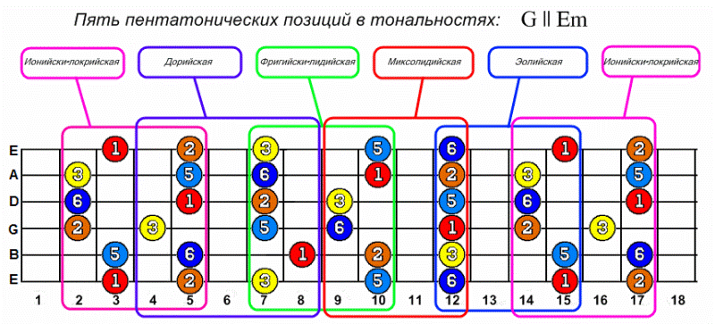
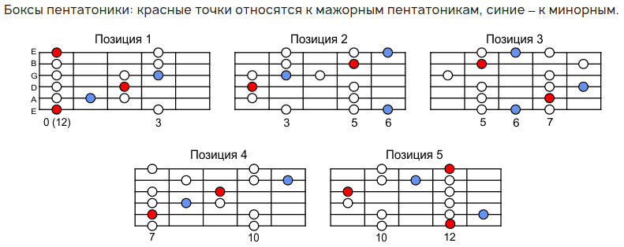
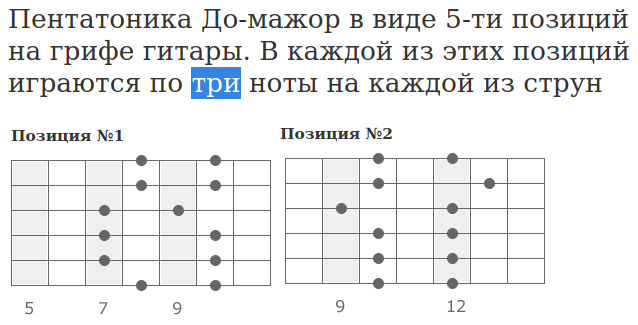
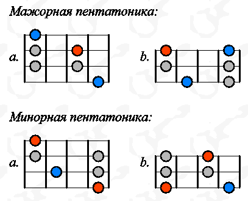
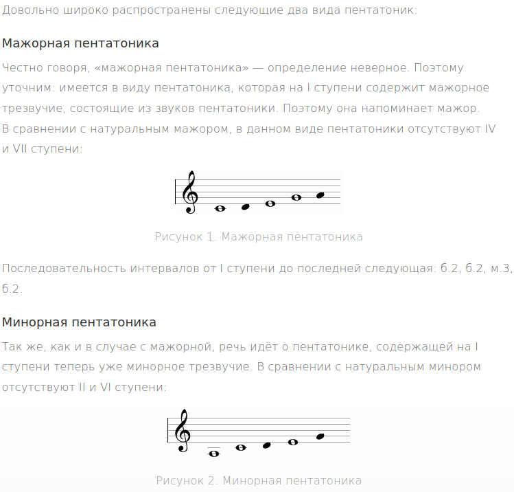

Проблемы с изучением пентатоники начинаются прямо с самих учебных материалов. В интернет-сайтах содержится неимоверное количество статей с ошибками. Ошибки самые разные и говорят о том, что либо писавшие статьи личности не очень понимают о чем они пишут, либо специально искажают информацию, либо просто невнимательные и непоследовательные люди. Вот примеры.
* * *
Первой ссылкой в поисковике выдается статья на известном сайте pop-music.ru. Эффективные менеджеры наняли школьника-копирайтера, который написал замечательную статью:
Пентатоника на гитаре
https://pop-music.ru/articles/pentatonika-na-gitare/
Что здесь не так? Первое что бросается в глаза - все иллюстрации с гитарными таблатурами и музыкальными станами надёрганы из совершенно разных источников. И вот какая в статье самая якркая картинка:

Тут даже опытный гитарист на некоторое время залипнет, чтобы понять, что за чудо здесь нарисовано? Вроде красненький миксолидийский бокс нарисован правильно, но остальные? Может быть, схема перевернута, такое бывает... Нет. Может быть, это какой-то особый вид пентатоники по гамме Хирайоши о которой мало кто знает? Нет. Оказывается, это классическая схема, но не перевернута, а отзеркалена по вертикали! Давай, начинающий гитарист, разбирайся! Поп-мьюзик тебе поможет.
Дальше идет вот такое утверждение:

Ох... Тут синие точки вообще не относятся к стандартным боксам пентатоники - ни к мажорному, ни к минорному. Здесь красными точками обозначена тоника минорной пентатоники. А синими точками - так называемая "блюзовая нота". Этой ноты нет в классической пентатонике, но она часто добавляется в блюзовой и джазовой импровизации.
Дальше в статье идут взаимоисключающие параграфы: наконец то прилеплена правильная картинка с боксами пентатоники. Но попробуй ее сопоставь с двумя предыдущими. Какой картинке верить начинающему гитаристу? Вероятность угадать - 1/3.
Самое ужасное то, что эти картинки кочуют из статьи в статью. Нужен пример? Пожалуйста:
О пентатонике
https://uchenikspb.ru/kbase/o-pentatonike/
Следующая статья в поиске вот такая:
Пентатоника До-мажор на грифе гитары
http://guitargeek.ru/blog/gammy-na-grife-gitary/item/184-pentatonika-do-mazhor-na-grife-gitary.html
Вроде бы картинки правильные, но ошибка буквально во втором абзаце:

Как же так? Вроде по схеме видно, что на каждой струне по две ноты. Неужели человек не может сосчитать до трех? Или, может быть, тут линейки струн не горизонтальные а вертикальные? Может быть, тут надо играть что-то еще, чтобы получилось три ноты на струне, но на схеме это не показано? Одни вопросы без ответа.
Некоторые авторы считают, что вот так сразу рассказывать про пентатонику на шесть струн - это слишком сложно. Поэтому пытаются упростить материал, и выдают статьи, где нарисованы половинки пентатоники:
Пентатоника...
https://guitarpages.narod.ru/Penta_Tone.html

Почему тут только 4 струны? Может быть, это схемы для укулеле? Но в статье об укулеле ни слова. Далее автор пишет: "Если объединить правую и левую аппликатуры, то получим аппликатуры для игры в одной позиции на всех шести струнах". Нет, дорогой товарищ. Если объединить левую и правую аппликатуры, то получим неполную аппликатуру двух стоящих рядом позиций пентатоники на трех-четырех струнах. Это подтверждает идущая далее картинка двух первых боксов пентатоники. Как из этих "половинок" получились полные боксы - остается загадкой для начинающего музыканта.
Упрощать пытаются не только гитарные табы, но и информацию на нотных станах:
Пентатоника
https://www.music-theory.ru/index.php?option=com_content&view=article&id=52&Itemid=239&lang=ru
Здесь не смогли нарисовать полную пентатонику, ограничились первыми нотами:

Конечно, согласно тексту речь идет об отличиях в мажорной и минорной пентатонике на основе трезвучий. Но тогда и рисунки надо называть соответственно: "Начальная часть мажорной пентатоники" или, к примеру "Тональное трезвучие минорной пентатоники". Зачем рисовать пять нот, и говорить что это пентатоника? Причем две из этих нот в пентатонику не входят.
* * *
Думаю, что я привел достаточно примеров, чтобы понять, насколько низкокачественные материалы лежат на профильных музыкальных сайтах. Выглядит как какой-то злобный заговор, призванный запутать начинающих музыкантов и не дать им пройти на следующий уровень понимания музыки. Да, с таким информационным пространством гитаристам не позавидуешь: совершенно непонятно, как молодняку можно самостоятельно разобраться в этой, по сути, достаточно простой теме. Можно только пожелать терпения и веры в лучшее.
Можно дать ссылку на эту статью тем, кто в какой-то момент сказал себе: эта тема не познаваема! И решил, что музыка не для него. Невозможно разобраться! На самом деле, в современном мире часто оказывается, что проблема не в ученике, а в учителе. Такое вот оно, постиндустриальное общество.